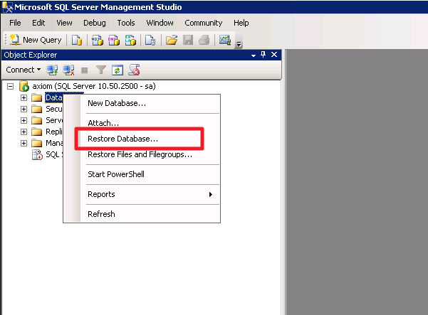
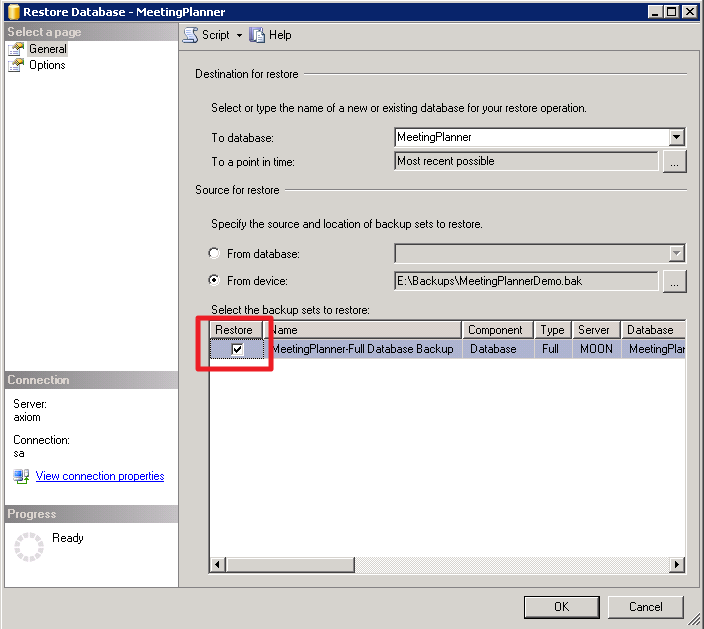
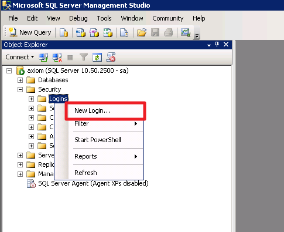
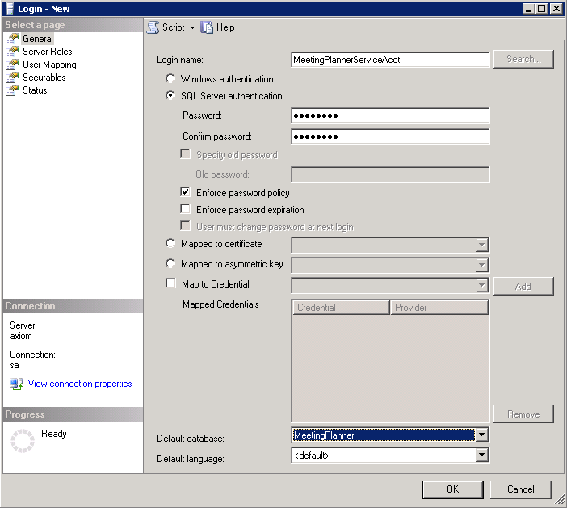
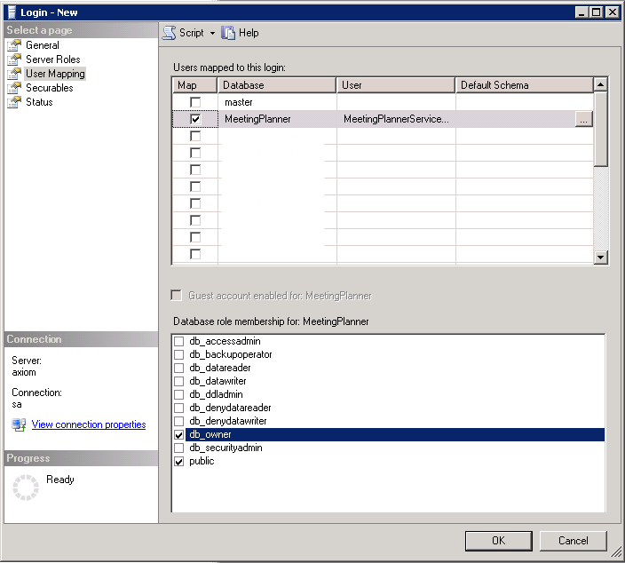

Database Server Configuration
Identify Database
After installing the Meeting Planner software, two .bak files will be placed on the application server in the <InstallationDirectory*>\MeetingPlannerConfiguration\Database folder.
- MeetingPlanner_Demo.bak: The demo database has preconfigured rooms, equipment, and other assets. This is typically the recommended database to use for trials, so that Meeting Planner will be up and running quickly.
*Typically: C:\Program Files (x86)\Emergingsoft
Restore Database
- Open Microsoft SQL Management Studio.
- Connect to the server that will hold the Meeting Planner database.
- Right-click on Database (Object Explorer, left pane) > Restore Database.

- Set the name for the new database (“To database” field).
- Select From device and click on the three dots to launch the folder browser.
- Select Add, and the .bak you wish to restore.
- Select OK.
- Select Restore.

- Select OK.
Setup SQL Login
- Go to Security (Object Explorer, left pane) > (right-click) Logins > New Login…

- Complete the General page.
- Specify a Login Name
- Select “SQL Server Authentication”
- Specify an account password
- Uncheck “Enforce password expiration”
- Go to the User Mapping page (left pane).

- Enable the “Map” box next to Meeting Planner and allocate db owner permissions.

- Select OK.